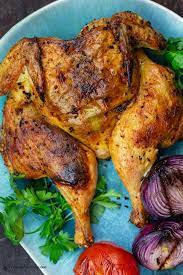

Whole Grilled Chicken
This Whole grilled Chicken is first brined ,the rubbed with paste of lemon

Ingredients
-
6 cups cold water
-
1/2 cup Diamond brand kosher salt
-
One (4-to 4 1/2 -pound) Chicken
-
Lemon,sliced thin
-
2 tablespoons roemary leaves, fineky chopped
-
2 tablespoons minced garlic,finely chopped
-
3 tablespoons extra-vigin olive oil
-
1/2 teaspoon freshly ground black pepper
Steps
-
Whisk together the water and salt in an 8-quart or large container.Add the chicken,cover and refrigerate for at least 12 hours.
-
Soak the wood chips, if using, in water for 30 minutes.
-
If using a charcoal grill,about 1 hour before grilling the chicken, set up your grill for indirect grilling
(which basically means putting the pile of coals on onee side and nothing on the other side).If using a gas grill, about
20minutes before grilling the chicken,heat your grill to 250 Degree F to 300 Degree F (121 deg C to 149 deg C) ,below medium.
-
combine the lemon slices , rosmary, garlic,oil and pepper in a food processor or mortar or molcajete or a heavy bowl and use a pestle or back of a wooden spoon to slowly but firmly mash the ingredients together until pulpy and mushy.
-
Remove the chicken from the brine , rinse under cold water , pat dry with paper towels .Rub the lemon
mixture onto the skin and let stand at room temperature for 15 minutes.
-
place the chicken on the grill directly over the heat.Grill 7 minutes or until grill marks and some charring appear.
Turn the chickenover and grill for 7 more minutes.
-
using tongs, move the chickento the the cool side of the grill .if using wood chips, sprinkle them over the hot coals or fashion them into a packet made of aluminum foil and piece the packet several times.Grill, covered with grill lid, for 1 1/2 hours or until a meat thermometer inserted in thickest portion registers 165 DegreeF(74degree C).(A meat themometer is enssential when when cooking a whole bird. the best place to check the chicken's
internal temperature is where the thigh meets the body of the bird. insert the thermometer deep into the meat, close to the bone.)
-
Remove the chicken from the grill and let it stand 10 minutes before carving and serving.